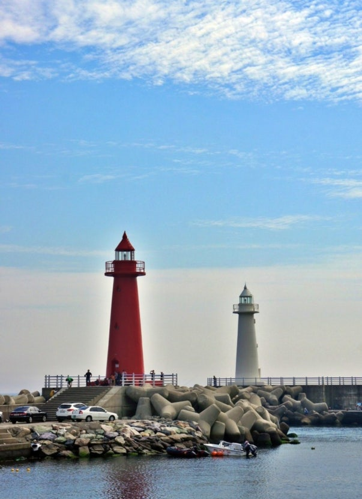

바다와 도시가 만나는 곳,
해운대에서 만나는 부산의 낭만
About
해운대는 푸른 바다와 눈부신 백사장, 그리고 도시의 활기가 함께 어우러진 부산의 대표적인 해안 공간입니다. 낮에는 끝없이 펼쳐진 바다를 바라보며 여유로운 시간을 보내고, 해가 지면 빛나는 도시의 풍경 속에서 또 다른 해운대를 만날 수 있습니다.
해운대해수욕장을 따라 이어지는 산책길과 동백섬의 푸른 숲, 달맞이길의 아름다운 풍경까지. 자연과 문화, 일상과 여행이 자연스럽게 겹쳐지는 이곳에서 바다를 바라보는 순간만큼은 잠시 천천히 걸어 보세요.
Must-Visit
HAEUNDAE BEACH · UNESCO
부산을 대표하는 넓은 백사장과 푸른 바다. 계절마다 다른 풍경과 함께 해운대의 가장 가까운 순간을 만날 수 있습니다.
NIGHT VIEW
바다 너머로 펼쳐지는 도시의 불빛과 마린시티의 야경을 한눈에 담을 수 있는 해운대의 밤.
NATURE & WALK
푸른 숲길을 따라 걷다 보면 바다와 도시가 만나는 풍경을 만날 수 있습니다. 해운대의 여유를 가장 가까이 느낄 수 있는 산책길입니다. 이미지:
DALMAJI ROAD
굽이진 길을 따라 이어지는 푸른 바다와 아름다운 풍경. 천천히 걸으며 해운대의 여유로운 분위기를 느껴보세요.

CHEONGSAPO
푸른 바다를 곁에 두고 천천히 걷는 해안 마을. 다릿돌전망대와 해변 풍경이 어우러져 해운대의 여유를 만날 수 있습니다.
BLUE LINE PARK
바다와 가장 가까운 곳에서 만나는 특별한 여행. 해변열차와 스카이캡슐을 타고 해운대 해안을 따라 펼쳐지는 풍경을 감상해보세요. blue-line-name {font-size: 22px;}
Travel Tips
🌅 추천 여행 시간
해운대의 매력을 가장 다양하게 즐기고 싶다면 오후부터 저녁까지의 시간을 추천합니다. 낮에는 푸른 바다를, 해 질 무렵에는 아름다운 노을을, 밤에는 빛나는 도시의 풍경을 만날 수 있습니다.
🚋 교통 & 이동
해운대는 지하철과 버스 등 대중교통으로 편리하게 이동할 수 있습니다. 주요 관광지는 도보로 이어지는 곳이 많아 천천히 걸으며 바다와 도시의 풍경을 함께 즐겨보세요.
🍜 해운대의 맛
바다를 만났다면 부산의 맛도 빼놓을 수 없습니다. 돼지국밥과 밀면부터 해산물과 어묵까지, 부산을 대표하는 음식으로 여행의 즐거움을 더해보세요.
🌙 밤에 만나는 해운대
해가 진 뒤에도 해운대의 여행은 계속됩니다. 해변을 따라 이어지는 야경과 마린시티의 빛나는 풍경을 천천히 걸으며 낮과는 또 다른 해운대를 만나보세요.
바다와 낭만이 당신을 기다립니다